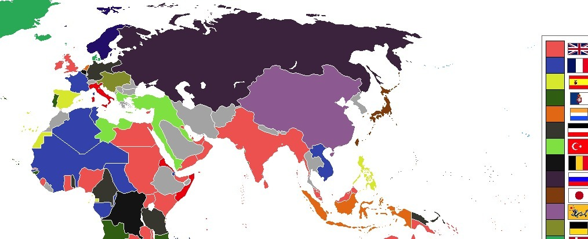

7.1 Shifting Power After 1900
- LO-A: Three great empires collapsed, 1911–1923: The Ottoman, Russian, and Qing empires, all land-based, multi-ethnic, and struggling with modernization, collapsed within roughly a decade. Their collapse was not coincidental: industrialization had widened the military and economic gap between them and Western powers, while internal reformers and nationalist movements pushed from within. Know the specific internal AND external factors for each. Russia's path: war → revolution → communism: The Russian Empire was severely weakened by WWI defeats (1914–1917), which discredited Tsar Nicholas II. The February Revolution (1917) ended the Romanov dynasty; the October Revolution (1917) brought the Bolsheviks to power. The result was the world's first communist state, a development that shaped all of 20th-century world history. Qing China: internal crisis + foreign pressure: The Qing Dynasty was weakened by the Opium Wars, Taiping Rebellion (20–30 million dead), Boxer Rebellion, and unequal treaties that gave foreign powers extraterritorial rights. In 1911, the Republican Revolution ended 2,000 years of imperial rule in China, though the republic was weak and soon consumed by warlordism. Mexico: revolution from political crisis: The Mexican Revolution (1910–1920) began as a political crisis when dictator Porfirio Díaz refused to allow free elections, then expanded into a social revolution over land, labor rights, and indigenous rights. It produced a new constitution (1917) guaranteeing land reform, workers' rights, and restrictions on foreign ownership, a model for later 20th-century revolutions.
Try each question before revealing the answer.
1. The Ottoman, Russian, and Qing empires all collapsed between 1911 and 1923. What common structural weakness did all three share that made them vulnerable to collapse in the industrial age?
2. Why did military defeat in WWI specifically trigger revolution in Russia, rather than in other countries that also suffered wartime losses?
3. The Mexican Revolution is described as arising from a "political crisis." Why might political crises produce revolutions rather than merely political reforms?
4. The AP CED says the West "dominated the global political order at the beginning of the 20th century" but that empires "gave way to new states by the century's end." What does this suggest about how the 20th century as a whole should be understood?
5. All three empires (Ottoman, Russian, Qing) had attempted modernization reforms before they collapsed. Why did reform fail to save these empires?
- Explain how internal and external factors contributed to change in various states after 1900, including the collapse of the Ottoman, Russian, and Qing empires and the Mexican Revolution
Tap a term for its definition.
-
Definition: A large empire that expands by conquering contiguous territory overland rather than through overseas colonization. Significance: The Ottoman, Russian, and Qing were all land-based empires that struggled against industrialized maritime powers and eventually collapsed by the early 20th century.
-
Definition: The belief that people sharing a common language, culture, or ethnicity deserve their own self-governing state. Significance: Nationalism was a key internal force that destabilized multi-ethnic empires, minority groups within the Ottoman, Russian, and Qing empires demanded independence or autonomy.
-
Definition: War in which Japan defeated Russia, the first time an Asian power defeated a European power in modern warfare. Significance: Humiliated the tsar, triggered the 1905 Revolution, and signaled that European dominance was not inevitable.
-
Definition: Popular uprising in Russia (February 1917) that forced Tsar Nicholas II to abdicate, ending the Romanov dynasty. Significance: The first of two revolutions in 1917; replaced autocracy with a Provisional Government that continued fighting WWI, a fatal mistake.
-
Definition: A Marxist revolutionary party led by Vladimir Lenin that seized power in Russia in the October Revolution (1917). Significance: Created the world's first communist state (the Soviet Union), triggering decades of ideological conflict between communism and capitalism.
-
Definition: The uprising that ended 2,000 years of imperial rule in China, replacing the Qing Dynasty with a republic under Sun Yat-sen. Significance: The collapse of the world's oldest continuous imperial system; the resulting republic was weak and gave way to warlordism, setting the stage for decades of instability.
-
Definition: A reformist movement within the Ottoman Empire that pushed for modernization, constitutionalism, and Turkish nationalism. Significance: Took power in a 1908 coup; their emphasis on Turkish nationalism alienated non-Turkish peoples and contributed to the empire's dissolution.
-
Definition: A massive social and political upheaval in Mexico triggered by opposition to dictator Porfirio Díaz, expanding into a struggle over land, labor, and indigenous rights. Significance: Produced the Constitution of 1917, which established workers' rights, land reform, and restrictions on foreign ownership, a model for later Latin American revolutions.
🌍 The World in 1900: European Dominance. But Not for Long
In 1900, the world looked like a European project. Britain, France, Germany, and other Western powers controlled roughly 84% of the earth's land surface through formal empires and informal economic dominance. European science, technology, and military power seemed unstoppable. But beneath this picture of dominance, powerful forces were already at work, forces that would shatter multiple empires within a single generation.
The AP CED frames Unit 7 around a crucial observation: the West dominated global politics at the start of the 20th century, but both land-based and maritime empires gave way to new states by the century's end. Topic 7.1 covers the first wave of that transformation, the collapse of three great land-based empires and the emergence of revolution as a political force.
🕌 The Ottoman Empire: Slow Collapse of the "Sick Man"
By 1900, the Ottoman Empire had been in crisis for decades. European observers called it the "Sick Man of Europe", a massive but financially weak state that had been losing territory since the 18th century. The empire's problems were structural: it was a multi-ethnic state (Turks, Arabs, Armenians, Greeks, Bulgarians, Kurds, and dozens of other groups) in an age when nationalism was pulling those groups apart. It was also financially dependent on European loans, which gave European powers leverage over Ottoman policy.
The final decades of the empire saw two competing responses: reform and repression. The Young Turks (Committee of Union and Progress) staged a successful coup in 1908, pushing for modernization and constitutional government. But they increasingly defined the empire in Turkish nationalist terms, which alienated Arab, Armenian, and Greek subjects. WWI was fatal: the Ottomans joined the Central Powers, suffered massive military defeats, and saw their Arab territories rise in revolt (supported by Britain). The empire was formally dissolved in 1923, replaced by the Turkish Republic under Mustafa Kemal (Atatürk).
🐉 Qing China: Two Thousand Years Ends
The Qing Dynasty ruled China for nearly three centuries (1644–1912), but the 19th century had been a catastrophe. The Opium Wars (1839–42, 1856–60) forced China to open its ports to European trade and grant extraterritorial rights to foreign nationals, meaning British, French, and American citizens in China were exempt from Chinese law. The Taiping Rebellion (1850–1864), one of the deadliest civil wars in human history, with an estimated 20–30 million dead, left the dynasty financially devastated. The Boxer Rebellion (1900) and its crushing defeat by a multinational European army humiliated the Qing further.
China's reformers tried. The Self-Strengthening Movement (1861–1895) attempted to adopt Western military technology while preserving Chinese culture and institutions, "Chinese learning for the substance, Western learning for the application." But Japan's defeat of China in the First Sino-Japanese War (1894–95) proved the reform had not gone far enough. In 1911, military uprisings triggered the Republican Revolution: the last Qing emperor, the six-year-old Puyi, abdicated. Two thousand years of imperial rule in China ended.

The three great land-based empires of 1900, Ottoman, Russian, Qing, had all collapsed or been transformed by 1925, replaced by republics, communist states, and new nation-states. AI-generated illustration (Google Gemini, 2025), commercially licensed.
🚩 Russia: From Empire to Communist Revolution
The Russian Empire in 1900 was the largest state in the world by territory, stretching from Poland to the Pacific, but it was economically underdeveloped compared to Western Europe. Industrialization had begun but was concentrated in a few cities; most Russians were still peasant farmers. The political system was autocratic: Tsar Nicholas II ruled by divine right and resisted any meaningful constitutional limits on his power.
Three crisis points broke the empire:
- 1905 Revolution: Russia's humiliating defeat in the Russo-Japanese War triggered strikes, peasant uprisings, and the "Bloody Sunday" massacre (soldiers shot peaceful protesters). Nicholas II promised a parliament (Duma) to restore order, but then steadily undermined its power.
- World War I (1914–1917): Russia suffered catastrophic losses, approximately 5 million casualties by 1917. The army began to disintegrate; food supply to cities collapsed. The tsar's personal command of the military made him personally responsible for every defeat.
- The Revolutions of 1917: The February Revolution (February/March 1917), spontaneous workers' strikes in Petrograd, led to Nicholas II's abdication. A Provisional Government took power but made the fatal decision to continue WWI. The October Revolution (October/November 1917) brought the Bolsheviks under Vladimir Lenin to power. Lenin's promise of "Peace, Land, Bread", ending the war, redistributing land, feeding the cities, gave the Bolsheviks mass support. Russia withdrew from WWI, and the world's first communist state was born.
🌮 Mexico: Revolution from Political Crisis
Mexico's path to revolution was different from the imperial collapses. It was not a multi-ethnic empire but a republic, and the crisis was specifically political. Porfirio Díaz had ruled Mexico as a dictator for 35 years (the Porfiriato, 1876–1911), modernizing the economy through foreign investment while concentrating land in the hands of a small elite and using the army to suppress opposition. Mexico had railroads, mining operations, and export agriculture, but most Mexicans remained desperately poor.
When Díaz rigged the 1910 election to prevent reform candidate Francisco Madero from winning, the country exploded. The Mexican Revolution (1910–1920) became a complex, multi-sided conflict with competing visions:
- Emiliano Zapata fought for indigenous villages' land rights in southern Mexico: "Land and Liberty."
- Pancho Villa led a popular northern army demanding economic justice for peasants and workers.
- Conservative elites fought to preserve their power and property.
The Revolution produced the Constitution of 1917, one of the most progressive constitutions in the world at the time. It guaranteed land reform, workers' rights (8-hour day, minimum wage), restrictions on foreign ownership of Mexican resources, and secular education. It was a genuinely radical document that shaped Mexican politics for the rest of the century.
These videos will help you review Shifting Power After 1900 and solidify key concepts before your exam.
- It focused exclusively on agricultural reform and ignored military technology
- It succeeded militarily but failed to prevent the spread of Marxist ideology from Russia
- It was opposed by the Young Turks, who preferred a complete Westernization of Chinese society
- It adopted Western military technology without addressing the political and institutional weaknesses that made China vulnerable
- the Provisional Government's decision to continue fighting World War I despite massive Russian casualties
- Japan's defeat of Russia in the Russo-Japanese War and the resulting humiliation of the tsar
- the Bolsheviks' military victory over the Romanov army in a series of decisive battles
- the spread of communist ideology through print media and secret revolutionary cells since the 1880s
- a communist revolution inspired by events in Russia and guided by Marxist ideology
- a political and social revolution triggered by a rigged election and expanded into struggles over land and labor
- a nationalist independence movement against Spanish colonial rule
- a military coup led by Porfirio Díaz to modernize Mexico through foreign investment
- Ideological opposition from communist revolutionary movements
- Economic competition from Japan's newly industrialized economy
- Military defeats by industrialized foreign powers that exposed structural weaknesses
- The spread of democratic nationalism from the United States and France
- Industrialization created structural pressures that land-based multi-ethnic empires were unable to successfully navigate
- Democratic ideology inevitably undermines all forms of imperial government
- World War I was the sole cause of empire collapse in the early 20th century
- Marxist revolutionary theory was primarily responsible for political instability across Eurasia